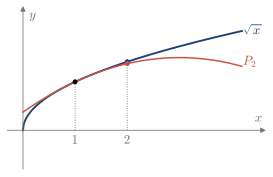

4.9 Error de Taylor
Al sustituir f por P_n se comete un error. Como normalmente no se conoce el valor exacto de f(x), ese error no se puede calcular, pero sí acotar.
Teorema de Taylor
El Ejemplo 4.21 permite aproximar e evaluando en x=1 los polinomios de e^x. Con e\approx2.71828: \begin{array}{c|ccccc} n & 0 & 1 & 2 & 3 & 6\\ \hline P_n(1) & 1 & 2 & 2.5 & 2.6667 & 2.71806\\ |e-P_n(1)| & 1.718 & 0.718 & 0.218 & 0.052 & 0.00023 \end{array} El error disminuye al subir el grado. El teorema de Taylor da su expresión sin necesidad de conocer e.
Teorema 4.11 (Taylor)
Si f es n+1 veces derivable en un intervalo que contiene a a y a x, el error E_n(x)=f(x)-P_n(x) es E_n(x)=\frac{f^{(n+1)}(z)}{(n+1)!}(x-a)^{n+1} para algún z entre a y x.
Con n=0 es el Teorema de Lagrange: f(x)-f(a)=f'(z)(x-a).
No se sabe dónde está z, solo que está entre a y x. Por eso se toma el peor caso.
Recuerda: cota del error
|E_n(x)|\le\frac{|x-a|^{n+1}}{(n+1)!}\,\max\left|f^{(n+1)}(z)\right|,\qquad z\ \text{entre}\ a\ \text{y}\ x
Ejemplo 4.26
Acotar el error de aproximar e con el polinomio de Maclaurin de grado n de e^x, y comprobar la cota con n=6.
Aquí f^{(n+1)}(z)=e^z, con z\in(0,1), así que e^z<e<3 y |E_n(1)|<\frac{3}{(n+1)!}. Con n=6, la cota es \frac{3}{5040}\approx0.0006. El error real, 0.00023, es menor, como debe ser.
Ejemplo 4.27
Sea f(x)=\sqrt x. (2019/20 3E)
- Calcular su polinomio de Taylor de grado 2 en a=1.
- Aproximar \sqrt2 con ese polinomio.
- Acotar el error cometido.
(a) f(1)=1, f'(1)=\frac12 y f''(1)=-\frac14, así que P_2(x)=1+\dfrac{x-1}{2}-\dfrac{(x-1)^2}{8}.
(b) \sqrt2\approx P_2(2)=\dfrac{11}{8}=1.375.
(c) f'''(x)=\frac38x^{-5/2} es positiva y decreciente en (1,2), así que su máximo en ese intervalo está en x=1 y vale \frac38. Por tanto, |E_2(2)|\le\frac{1^3}{3!}\cdot\frac38=\frac{1}{16}=0.0625. Es decir, \sqrt2=1.375\pm0.0625.
Comprobación: \sqrt2\approx1.41421, así que el error real es 0.039, menor que la cota (Figura 4.28).

Figura 4.28. \sqrt x y P_2. La separación en x=2 es el error E_2(2).
Elegir el grado
La cota permite decidir de antemano qué grado hace falta para una precisión dada: se sube n hasta que la cota sea menor que el error admitido.
Ejemplo 4.28
Usando el polinomio de Maclaurin de f(x)=\ln(1-x), aproximar \ln1.1 con un error menor que 10^{-3}. (2024/25 6E)
Las derivadas son f^{(k)}(x)=-\dfrac{(k-1)!}{(1-x)^k}, así que f^{(k)}(0)=-(k-1)! y P_n(x)=-\left(x+\frac{x^2}{2}+\dots+\frac{x^n}{n}\right). Como \ln1.1=f(-0.1), z está en (-0.1,0). Ahí, |f^{(n+1)}(z)|=\dfrac{n!}{(1-z)^{n+1}} es máxima en z=0 y vale n!. Por tanto, |E_n(-0.1)|\le\frac{(0.1)^{n+1}}{(n+1)!}\,n!=\frac{(0.1)^{n+1}}{n+1}. Con n=1, la cota es 0.005, que no basta. Con n=2, es \frac13\cdot10^{-3}, que sí. Así, \ln1.1\approx P_2(-0.1)=0.1-\frac{(0.1)^2}{2}=0.095. Comprobación: \ln1.1\approx0.09531, con un error de 0.00031.
Justificación de los tests de la segunda derivada
El Teorema 4.9 se justifica con el teorema de Taylor para n=1, centrado en el punto crítico z y llamando \xi al punto intermedio. Como f'(z)=0, f(z+h)-f(z)=\frac12f''(\xi)\,h^2,\qquad \xi\ \text{entre}\ z\ \text{y}\ z+h. Si f'' es continua y f''(z)>0, entonces f''>0 cerca de z. Para h pequeño, también f''(\xi)>0, de modo que f(z+h)>f(z) y hay un mínimo local. Si f''(z)<0, el mismo razonamiento da un máximo local.
La misma fórmula, sin f'(z)=0, da la distancia de la curva a su tangente: f(x)-P_1(x)=\frac12f''(\xi)(x-z)^2. Si f''>0, la curva queda por encima de la tangente; si f''<0, por debajo.
Derivadas de orden superior
Si f''(z)=0, el test de la segunda derivada no decide. Se busca entonces la primera derivada que no se anule en z, de orden n. Si esa derivada es continua, por el teorema de Taylor, f(z+h)-f(z)=\frac{f^{(n)}(\xi)}{n!}\,h^n,\qquad \xi\ \text{entre}\ z\ \text{y}\ z+h. El signo depende de f^{(n)}(z) y de si h^n cambia de signo con h, es decir, de si n es par o impar.
Recuerda: extremos e inflexión con derivadas superiores
Si f'(z)=\dots=f^{(n-1)}(z)=0 y f^{(n)}(z)\ne0: \begin{array}{c|cc} & f^{(n)}(z)>0 & f^{(n)}(z)<0\\ \hline n\ \text{par} & \text{mínimo local} & \text{máximo local}\\ n\ \text{impar} & \text{no es extremo} & \text{no es extremo} \end{array} Si f''(z)=\dots=f^{(n-1)}(z)=0 y f^{(n)}(z)\ne0, con cualquier f'(z): \begin{array}{c|cc} & f^{(n)}(z)>0 & f^{(n)}(z)<0\\ \hline n\ \text{par} & \text{cóncava} & \text{convexa}\\ n\ \text{impar} & \text{inflexión} & \text{inflexión} \end{array}
Por ejemplo, en el Ejemplo 4.13, x^4 tiene n=4 y f^{(4)}(0)>0, así que hay un mínimo local en x=0. Y x^5 tiene n=5, así que hay un punto de inflexión.
Con los contenidos de esta sección puedes hacer los ejercicios 4.40–4.44.